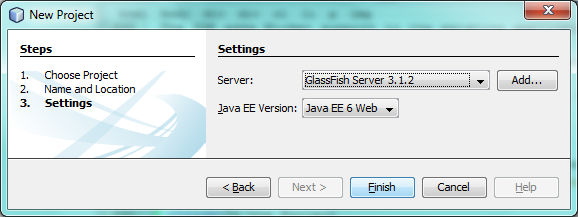
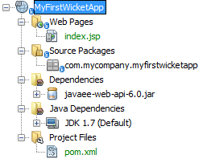
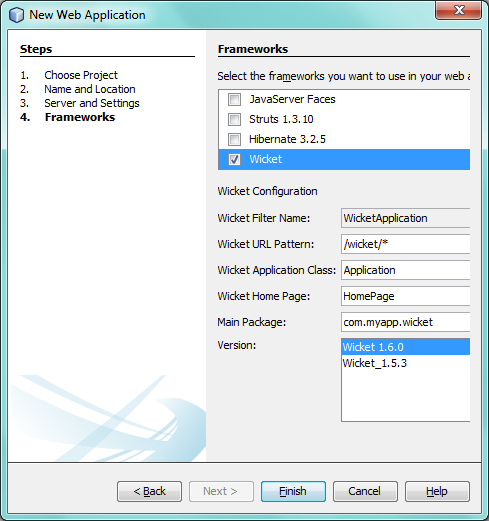
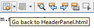
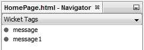
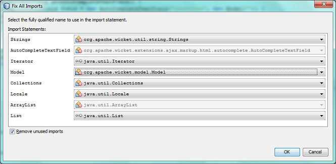

Apache NetBeans
Apache NetBeansLatest release
Wicket Web 框架简介
| This tutorial needs a review. You can edit it in GitHub following these contribution guidelines. |
本文档逐步向您介绍创建可重用组件并将其组合到 Web 应用程序的基础知识。每个组件均由一个 Java 类和一个 HTML 文件组成。允许您以这种方式开发应用程序的框架称为 Wicket。除了基于组件的方法，Wicket 的一个显著特征就是不需要 XML 配置文件。使用 Java 类进行应用程序范围的设置（例如主页标识），而不使用 XML 配置文件。
在 Java 类中创建 Web 应用程序中的每个窗口部件并将其呈现在 HTML 页中。Java 类和 HTML 页必须具有相同的名称且存在于相同的源结构中。它们通过 Wicket 标识符彼此链接。将向您演示 IDE 如何支持 Wicket 应用程序开发，以便您可以快速有效地创建可重用组件，这样您无需执行太多操作即可生成外观一致的 Web 应用程序。

Figure 1. 此页上的内容适用于 NetBeans IDE 7.2、7.3、7.4 和 8.0
要学习本教程，您需要具备以下软件和资源。
| 软件或资源 | 要求的版本 |
|---|---|
7.2、7.3、7.4、8.0、Java EE |
|
Java 开发工具包 (JDK) |
版本 7 或更高版本 |
NetBeans IDE 的 Wicket 插件 |
|
GlassFish Server Open Source Edition 或 Tomcat Servlet 容器 |
3.1.x 或更高版本 和 版本 7.x 或更高版本 |
注：
-
NetBeans 的 Wicket 支持插件包含以下模块：
-
*org-netbeans-modules-web-wicket.nbm。*提供在本教程中使用的 Wicket 特定的功能。
-
*org-netbeans-modules-wicket-templates.nbm。*提供用于创建典型 Wicket 工件（例如，页面和面板）的 Wicket 文件级别模板。
-
*org-netbeans-modules-wicket-library.nbm。*提供 Wicket JAR，并将其安装在 IDE 的库管理器中。因此，您无需从 Wicket 站点下载 Wicket 发行版本，因为该插件提供了您需要的所有内容。
-
要将 Wicket 支持插件安装到 IDE，请转到 "Plugin Manager"（插件管理器）（从主菜单中选择 "Tools"（工具）> "Plugins"（插件）），然后在 "Downloaded"（已下载）标签下安装该插件。有关如何将框架插件安装到 IDE 的更详细说明，请参见添加对 Web 框架的支持。
-
有关 Wicket 的更多信息，请访问 http://wicket.sourceforge.net/。有关 NetBeans IDE 中的 Wicket 支持的开发页，请访问 http://java.net/projects/NbWicketSupport。如果您熟悉 Wicket，欢迎您为 NetBeans IDE 的 Wicket 插件贡献代码。
设置环境
在开始编写 Wicket 应用程序之前，您必须确保具有所有必需的软件并且您的项目设置正确。如上所述，安装 NetBeans IDE 的 Wicket 支持插件之后，您可以通过一个向导设置 Wicket 应用程序所需的所有基本文件。
创建 Wicket 应用程序的源代码结构
应用程序的源代码结构必须包含 Wicket JAR 文件、 web.xml 文件中的 Wicket servlet 注册，以及一些标准工件，例如应用程序类和主页。由于我们使用的是 IDE，因此应该不需要手动创建所有这些文件。而我们可以通过向导来执行操作。
根据您的需求，选择以下某个适当的方案：
方案 1：从头开始创建基于 Ant 的 Wicket 应用程序
在 IDE 中创建新的 Web 应用程序时，Web 应用程序向导的最终面板在 Wicket 应用程序的上下文中非常有用。
-
选择 "File"（文件）> "New Project"（新建项目）。在 "Categories"（类别）下，选择 "Web"。在 "Projects"（项目）下，选择 "Web Application"（Web 应用程序）。单击 "Next"（下一步）。
-
在 "Name and Location"（名称和位置）面板的 "Project Name"（项目名称）中，键入
MyFirstWicketApp。将项目位置更改为计算机上的任意目录。单击 "Next"（下一步）。 -
保留所有设置不变。您也可以根据需要更改它们。Wicket 支持任何版本的 Java EE。可以将 Wicket 应用程序部署到任何服务器。单击 "Next"（下一步）。 4. 在 "Frameworks"（框架）面板中，选择 "Wicket"，如下所示：

*注：*根据安装到 IDE 的模块不同，您可能会在以上屏幕快照所示的 "Frameworks"（框架）列表中看到更多或更少的项。
在以上所示的面板中，保留所有默认值不变。以上面板提供以下字段：
-
Wicket Filter Name（Wicket 过滤器名称）。显示将在
web.xml文件中定义的过滤器的名称。 -
Wicket URL Pattern（Wicket URL 模式）。将相对 URL 模式添加到
web.xml文件中。 -
Wicket Application Class（Wicket 应用程序类）。指定设置应用程序范围设置（例如主页）的类的名称。
-
Wicket Home Page（Wicket 主页）。指定将包含称为
xxx.java和xxx.html的文件的主页名称。 -
Main Package（主包）。IDE 将生成的所有工件放入的 Java 包。
-
Version（版本）。Wicket 版本。以上 "Version"（版本）下拉列表中将列出库管理器中名称以 "Wicket" 开头的所有库。默认情况下，唯一列出的版本是 1.6.0，因为这是插件所提供的版本。
-
单击 "Finish"（完成）。
-
IDE 将创建 MyFirstWicketApp 项目。此项目包含所有源代码和项目元数据，例如项目的 Ant 构建脚本。此项目在 IDE 中打开。可以在 "Projects"（项目）窗口（Ctrl-1 组合键）中查看其逻辑结构：

方案 2：从头开始创建基于 Maven 的 Wicket 应用程序
当您已有一个基于 Ant 的应用程序时，IDE 可帮助您添加 Wicket 支持。
-
选择 "File"（文件）> "New Project"（新建项目）。在 "Categories"（类别）下，选择 "Maven"。在 "Projects"（项目）下，选择 "Web Application"（Web 应用程序）。

单击 "Next"（下一步）。
-
在 "Name and Location"（名称和位置）面板的 "Project Name"（项目名称）中，键入
MyFirstWicketApp。根据您的需求更改 "Project Location"（项目位置）和默认 Maven 设置。

单击 "Next"（下一步）。
-
根据您的需求选择适当的服务器，并选择 "Java EE 6 Web" 作为 "Java EE Version"（Java EE 版本）设置。

单击 "Finish"（完成）。IDE 将创建下面显示的源代码结构：

-
因为我们已添加对 Java EE 6 的支持，所以上一步中未创建
web.xml文件。但是，Wicket 要求在web.xml文件中注册 Wicket 应用程序过滤器。因此，我们将在应用程序中添加新的web.xml文件，然后继续。
右键单击应用程序，选择 "New"（新建）> "Other"（其他），然后选择 "Web" > "Standard Deployment Descriptor"（标准部署描述符）(web.xml)。单击 "Next"（下一步），然后单击 "Finish"（完成）。
-
此时我们即可将 Wicket 支持添加到应用程序中。右键单击项目节点，然后选择 "Properties"（属性）。在 "Project Properties"（项目属性）对话框中，选择 "Frameworks"（框架），然后单击 "Wicket"。使用前几部分中的描述在此对话框的 "Wicket Configuration"（Wicket 配置）部分中填写详细信息。单击 "OK"（确定）。
IDE 将创建入门所需的所有 Wicket 文件：

方案 3：根据原型创建基于 Maven 的 Wicket 应用程序
原型存在于 Maven 资源库中，用于设置 Wicket 应用程序。
-
选择 "File"（文件）> "New Project"（新建项目）。在 "Categories"（类别）下，选择 "Maven"。在 "Projects"（项目）下，选择 "Project from Archetype"（基于原型的项目）。

单击 "Next"（下一步）。
-
在 "Search"（搜索）字段中，键入 "wicket"，然后选择要使用的原型。

根据您的需求使用适当的值完成向导。单击 "Finish"（完成）。
IDE 将向根据原型创建的应用程序中添加 Wicket 支持。
方案 4：将 Wicket 支持添加到现有应用程序中
当您已有一个应用程序（无论是基于 Ant 还是基于 Maven 创建的）时，IDE 可帮助您添加 Wicket 支持。
-
右键单击应用程序，然后选择 "Properties"（属性）。
-
在 "Project Properties"（项目属性）对话框中，选择 "Frameworks"（框架）面板，然后单击 "Add"（添加）。然后选择 "Wicket"。单击 "OK"（确定）。
-
使用上一部分中的描述在 "Frameworks"（框架）面板中填写 "Wicket Configuration"（Wicket 配置）。
-
单击确定以进行确认。
IDE 将向现有应用程序中添加 Wicket 支持。
在下一部分，我们将详细了解生成的每个文件。
提供对 Wicket 的替代版本的支持
NetBeans Wicket 插件中包含的 Wicket 版本可能不是您需要的版本。执行以下步骤以注册和使用 Wicket 的替代版本。
-
转到 "Tools"（工具）| "Ant Libraries"（Ant 库）。请注意，NetBeans Wicket 插件所注册的 Wicket JAR 可用：

-
在上面显示的对话框中，单击 "New Library"（新建库），使用以 "Wicket" 开头的名称创建一个新库。将 JAR 添加到该库中，即，将 Wicket 的首选版本的 JAR 注册到您已创建的库中。
. 当您接下来创建新的 Web 应用程序时，或将 Wicket 支持添加到现有应用程序中时，"Frameworks"（框架）面板将显示新注册的库（如果其名称以 "Wicket" 一词开头）：

完成向导后，在所选库中注册的 JAR 将放在应用程序的类路径上。
*注：*以上方法适用于基于 Ant 的 Wicket 应用程序。如果要在基于 Maven 的应用程序中使用 Wicket 的替代版本，请更改相关的 POM 文件。
检查生成的 Wicket 应用程序的源代码结构
IDE 的 Web 应用程序向导已经为我们创建了许多文件。在此可查看这些文件并了解这些文件在 Wicket 开发的上下文内是如何彼此相关的。
-
让我们开始了解生成的文件。
-
Web Descriptor（Web 描述符）。首先查看
web.xml文件，该文件是符合 Servlet 规范的所有 Web 应用程序通用的一般部署描述符。展开WEB-INF文件夹或 "Configuration Files"（配置文件）文件夹，在原始 XML 视图中打开文件，然后查看 Wicket 过滤器的定义：
-
<?xml version="1.0" encoding="UTF-8"?>
<web-app version="3.0" xmlns="http://java.sun.com/xml/ns/javaee"
xmlns:xsi="http://www.w3.org/2001/XMLSchema-instance"
xsi:schemaLocation="http://java.sun.com/xml/ns/javaee
http://java.sun.com/xml/ns/javaee/web-app_3_0.xsd">
<filter>
<filter-name>WicketApplication</filter-name>
<filter-class>org.apache.wicket.protocol.http.WicketFilter</filter-class>
<init-param>
<param-name>applicationClassName</param-name>
<param-value>com.myapp.wicket.Application</param-value>
</init-param>
</filter>
<filter-mapping>
<filter-name>WicketApplication</filter-name>
<url-pattern>/wicket/*</url-pattern>
</filter-mapping>
<session-config>
<session-timeout>
30
</session-timeout>
</session-config>
<welcome-file-list>
<welcome-file/>
</welcome-file-list>
</web-app>*注：*应用程序类名的值设置为 com.myapp.wicket.Application 。在下一步中，我们将打开应用程序类文件并检查其内容。
-
Wicket Application Class（Wicket 应用程序类）。打开 "Source Packages"（源包）文件夹中的
com.myapp.wicket包，然后打开Application.java文件。此文件如下所示：
package com.myapp.wicket;
import org.apache.wicket.protocol.http.WebApplication;
public class Application extends WebApplication {
public Application() {
}
@Override
public Class getHomePage() {
return HomePage.class;
}
}这是提供应用程序范围设置的 Java 文件，可比较于 Struts 框架中的 struts-config.xml 和 JSF 框架中的 faces-config.xml 。注意 getHomePage() 方法的定义。此方法是应用程序范围类的最低要求。它指定部署应用程序时将显示的第一页（主页）。请注意，返回了 HomePage.class 。在下一步中，我们将打开 HomePage.java 文件并检查其内容。
-
Wicket Home Page（Wicket 主页）。打开
HomePage.java。此文件如下所示：
package com.myapp.wicket;
public class HomePage extends BasePage {
public HomePage() {
add(new Label("message", "Hello, World!"));
}
}此文件将向主页中添加标签。呈现在此文件中创建的 Wicket 窗口部件是在具有相同源代码结构中的相同名称的文件中完成的，该文件只能是 HomePage.html ，目前看起来如下所示：
<!DOCTYPE html PUBLIC "-//W3C//DTD XHTML 1.0 Strict//EN" "http://www.w3.org/TR/xhtml1/DTD/xhtml1-strict.dtd">
<html xmlns="http://www.w3.org/1999/xhtml"
xmlns:wicket="http://wicket.apache.org/dtds.data/wicket-xhtml1.4-strict.dtd"
xml:lang="en"
lang="en">
<head>
<wicket:head>
<title>Wicket Example</title>
</wicket:head>
</head>
<body>
<wicket:extend>
<h1 wicket:id="message">This gets replaced</h1>
</wicket:extend>
</body>
</html>请注意，我们在 HomePage.java 中扩展 BasePage 。在 HomePage.html 中具有一个 wicket:id 属性，该属性指示这是 Java 文件在某位置创建的某内容的占位符。另外，我们还引用了 IDE 生成的 CSS 样式表。您可以在 "Projects"（项目）窗口的 "Web Pages"（Web 页）文件夹中找到该样式表。在下一步中，我们将打开 BasePage 并检查其内容。
-
Base Page（基本页）。打开
BasePage.java。内容如下所示：
package com.myapp.wicket;
import org.apache.wicket.markup.html.WebPage;
public abstract class BasePage extends WebPage {
public BasePage() {
super();
add(new HeaderPanel("headerpanel", "Welcome To Wicket"));
add(new FooterPanel("footerpanel", "Powered by Wicket and the NetBeans Wicket Plugin"));
}
}这是我们希望所有 Web 页扩展的类。每个扩展 BasePage 的类都将继承 HeaderPanel 和 FooterPanel 的实例。这可确保所有 Web 页都将具有相同的页眉和页脚。基本页的 HTML 端如下所示：
<!DOCTYPE html PUBLIC "-//W3C//DTD XHTML 1.0 Strict//EN" "http://www.w3.org/TR/xhtml1/DTD/xhtml1-strict.dtd">
<html xmlns="http://www.w3.org/1999/xhtml"
xmlns:wicket="http://wicket.apache.org/dtds.data/wicket-xhtml1.4-strict.dtd"
xml:lang="en"
lang="en">
<head>
<wicket:head>
<wicket:link>
<link rel="stylesheet" type="text/css" href="style.css"/>
</wicket:link>
</wicket:head>
</head>
<body>
<header wicket:id="headerpanel" />
<section class="content_container">
<wicket:child/>
</section>
<footer wicket:id="footerpanel" />
</body>
</html>在下一步中，我们将打开 HeaderPanel.java 并检查其内容。
-
Header Panel（页眉面板）。打开
HeaderPanel.java。内容如下所示：
package com.myapp.wicket;
import org.apache.wicket.markup.html.basic.Label;
import org.apache.wicket.markup.html.panel.Panel;
public class HeaderPanel extends Panel {
public HeaderPanel(String componentName, String exampleTitle)
{
super(componentName);
*add(new Label("exampleTitle", exampleTitle));*
}
}请注意上面粗体显示的行。在此我们创建一个 Wicket 标签窗口部件。HeaderPanel 是可重用组件。这是创建了窗口部件的 Java 端。接下来，我们将查看预期呈现 Wicket 标签窗口部件的 HTML 端。在下一步中，我们将打开 HeaderPanel.html 文件并检查其内容。
现在，将第二个参数更改为 "My Very First Component Based Application"，以使标签的定义此时如下所示：
add(new Label("exampleTitle", "My Very First Component Based Application"));打开 HeaderPanel.html 。请注意，它的名称与我们刚刚查看的 Java 文件的名称相同。在相同的包结构内找到此文件。内容如下所示：
<!DOCTYPE html PUBLIC "-//W3C//DTD XHTML 1.0 Strict//EN" "http://www.w3.org/TR/xhtml1/DTD/xhtml1-strict.dtd">
<html xmlns="http://www.w3.org/1999/xhtml"
xmlns:wicket="http://wicket.apache.org/dtds.data/wicket-xhtml1.4-strict.dtd"
xml:lang="en"
lang="en">
<head><title>Wicket Example</title></head>
<body>
<wicket:panel>
<h1>Wicket Example</h1>
<p id="titleblock">
<b><font size="+1">Start of <span wicket:id="exampleTitle">Example Title Goes Here</span></font></b>
</p>
</wicket:panel>
</body>
</html>请注意上面粗体显示的行。这是您指定应在 Web 页 HTML 端呈现窗口部件的位置的方式。按住 Ctrl 键并将鼠标移到 span 标记中的 wicket:id 属性值之上。请注意，此值将转变为超链接：

单击该超链接，此时注意将打开 Java 端的 Web 页。
现在，单击源代码编辑器顶部的左箭头以返回到 HTML 页：

通过这种方式，可以在 Wicket 组件的两端之间快速有效地导航。
-
Footer Panel（页脚面板）。页脚面板的结构与页眉面板相同，如上所示。
. 右键单击项目并运行该项目。IDE 将编译应用程序，创建 WAR 文件，将该文件发送到部署服务器，打开 IDE 的默认浏览器，并显示应用程序：

*注：*确保将 "/wicket" 附加到 URL（如上所示），以便将 URL 映射到 web.xml 文件中注册的 Wicket 过滤器。
使用 Wicket 功能
在下面各个部分，您将了解三个关键的 Wicket 功能以及 NetBeans IDE 如何通过 NetBeans Wicket 插件支持这些功能：
下面各个部分还向您介绍了 NetBeans Wicket 插件提供的各种支持的功能。
添加窗口部件
在此部分，我们将在 Wicket 中创建第一个窗口部件。就像 Wicket 中的其他大多数工件一样，窗口部件具有一个 Java 端和一个 HTML 端。在 Java 端创建窗口部件。在 HTML 端呈现窗口部件。如上所示，可通过超链接在两端之间导航。
-
打开
HomePage.html。如果 "Palette"（组件面板）未自动打开，请通过 "Window"（窗口）> "Palette"（组件面板）（Ctrl-Shift-8 组合键）将其打开。

-
在 HTML 文件中的 H1 元素下方添加一行之后，将 "Label"（标签）项从 "Palette"（组件面板）拖放到 H1 元素下方。您会看到下面的对话框：

将此对话框中的值更改为以下值：

单击 "OK"（确定）。请注意，下面粗体显示的标记已添加到文件中：
<!DOCTYPE html PUBLIC "-//W3C//DTD XHTML 1.0 Strict//EN" "http://www.w3.org/TR/xhtml1/DTD/xhtml1-strict.dtd">
<html xmlns="http://www.w3.org/1999/xhtml"
xmlns:wicket="http://wicket.apache.org/dtds.data/wicket-xhtml1.4-strict.dtd"
xml:lang="en"
lang="en">
<head>
<wicket:head>
<title>Wicket Example</title>
</wicket:head>
</head>
<body>
<wicket:extend>
<h1 wicket:id="message">This gets replaced</h1>
*<span wicket:id="message1">This gets replaced</span>*
</wicket:extend>
</body>
</html>现在，您即可使用 H3 标记等为新添加的窗口部件添加样式：
<h3 wicket:id="message1">This gets replaced</h3>接下来，打开 HomePage.java ，注意添加了一个标签，该标签具有 HTML 文件中的相同标识符（更改内容以*粗体*显示）：
public class HomePage extends BasePage {
public HomePage() {
add(new Label("message", "Hello, World!"));
*add(new Label("message1", "Hello again, World!"));*
}
}.
保存文件。刷新浏览器后，您将会看到在 HomePage.html 文件中呈现的 Wicket 标签：

您可以创建占位符（就像在上面的 HomePage.html 文件中创建的标记一样），然后将 HTML 文件传递给 Web 设计者。当 Web 设计者设计 Web 页时，您可以在 Java 端完全独立地创建窗口部件。由于 HTML 标记未嵌入到 Java 文件中，因此您和 Web 设计者可以实现 Wicket 中心焦点的“关注分离”。
打开 "Navigator"（导航器）（"Window"（窗口）> "Navigating"（导航）> "Navigator"（导航器）），同时在编辑器中选定以上 HTML 文件，然后您即可查看导航器 "Wicket Tags"（Wicket 标记）列表中的标记概览：

如果匹配的 HTML 页中不存在匹配的标记，您将会在 Java 文件中看到错误消息：

添加可重用组件
“可重用组件”概念是 Wicket 的优势之一。在此部分，我们将使用向导生成一个面板，该面板再次具有 Java 端和 HTML 端。我们将创建该面板，以便在 Web 页上重用我们具有的标帜，这样该标帜就会在 Web 站点之间保持一致。我们会看到将面板添加到 Web 页中是多么容易。
-
右键单击
com.myapp.wicket包节点，然后选择 "New"（新建）> "Other"（其他）。在 "Categories"（类别）下，选择 "Web"。在 "File Types"（文件类型）下，注意以下模板：

选择 "Wicket Panel"（Wicket 面板）并单击 "Next"（下一步）。
-
在 "File Name"（文件名）中键入
BannerPanel。您现在应该看到下面的屏幕：

单击 "Finish"（完成）。
请注意，我们的包中现在包含 BannerPanel.html 和 BannerPanel.java 这两个新文件。
-
打开
BannerPanel.html，注意此文件的内容如下：
<?xml version="1.0" encoding="UTF-8"?>
<!DOCTYPE html PUBLIC "-//W3C//DTD XHTML 1.0 Strict//EN" "http://www.w3.org/TR/xhtml1/DTD/xhtml1-strict.dtd">
<html xmlns:wicket>
<head>
<meta http-equiv="Content-Type" content="text/html; charset=UTF-8"/>
<title>BannerPanel</title>
</head>
<body>
<wicket:panel>
<!-- TODO - add components here, ala
<span wicket:id="title">title here</span>
-->
</wicket:panel>
</body>
</html在 wicket:panel 标记之间找到 Wicket 占位符。删除 SPAN 标记上方和下方的行，以便不再注释掉带有 SPAN 标记的行。按住 Ctrl 键并将鼠标移到 Wicket ID 值上方，然后单击出现的超链接。 BannerPanel.java 文件将打开：
package com.myapp.wicket;
import org.apache.wicket.markup.html.panel.Panel;
public final class BannerPanel extends Panel {
BannerPanel(String id) {
super (id);
}
}如之前在 HomePage.java 文件中所做的那样，添加下面粗体显示的标签：
package com.myapp.wicket;
*import org.apache.wicket.markup.html.basic.Label;*
import org.apache.wicket.markup.html.panel.Panel;
public final class BannerPanel extends Panel {
BannerPanel(String id) {
super (id);
*add(new Label("title","I am a reusable component!"));*
}
}-
我们的面板虽然简单，但实际上已经完整。将该面板添加到主页中。打开
HomePage.java，然后通过在构造函数结尾添加以下行来创建 BannerPanel 的新实例：
add(new BannerPanel("bannerPanel"));-
接下来，我们需要呈现面板。打开
HomePage.html，然后在结束的 BODY 标记上方添加占位符标记，并确保使用 Java 文件中使用的相同 Wicket 标识符：
<span wicket:id='bannerPanel'/>. 重新运行项目。请注意，面板的显示位置完全如 HTML 文件指定的：

在 Wicket 术语中，面板是可重用组件。正如此部分所示，您可以任意频繁地重用该面板并且可以在任意多的 Web 页中使用。
添加 AJAX 功能
代替使用 JavaScript 将异步 Web 功能（通过 AJAX 技术）添加到 Wicket 应用程序中，Wicket 提供了一个封装 AJAX 功能的 Java 组件模型。下面，将向您演示如何更改 BannerPanel 以包含 AJAX 自动完成窗口部件，而不是之前创建的标签窗口部件。
-
在
BannerPanel类的 HTML 端，从 "Palette"（组件面板）拖动 AJAX 文本输入项（Ctrl-Shift-8 组合键），如下所示：

将此项放在现有 Wicket 占位符下方，如下所示：
<?xml version="1.0" encoding="UTF-8"?>
<!DOCTYPE html PUBLIC "-//W3C//DTD XHTML 1.0 Strict//EN" "http://www.w3.org/TR/xhtml1/DTD/xhtml1-strict.dtd">
<html xmlns:wicket>
<head>
<meta http-equiv="Content-Type" content="text/html; charset=UTF-8"/>
<title>BannerPanel</title>
</head>
<body>
<wicket:panel>
<span wicket:id="title">title here</span>
*<input type="text" wicket:id="countries" size="50"/>*
</wicket:panel>
</body>
</html>-
在匹配的 Java 端，注意已自动添加了以下内容：
final AutoCompleteTextField field = new AutoCompleteTextField("countries", new Model("")) {
@Override
protected Iterator getChoices(String input) {
if (Strings.isEmpty(input)) {
return Collections.EMPTY_LIST.iterator();
}
List choices = new ArrayList(10);
Locale[] locales = Locale.getAvailableLocales();
for (int i = 0; i < locales.length; i++) {
final Locale locale = locales[i];
final String country = locale.getDisplayCountry();
if (country.toUpperCase().startsWith(input.toUpperCase())) {
choices.add(country);
if (choices.size() == 10) {
break;
}
}
}
return choices.iterator();
}
};-
按 Ctrl-Shift-I 组合键，然后确保选择正确的 import 语句：

单击 "OK"（确定），然后确保 BannerPanel 类使用以下 import 语句：
import java.util.ArrayList;
import java.util.Collections;
import java.util.Iterator;
import java.util.List;
import java.util.Locale;
import org.apache.wicket.extensions.ajax.markup.html.autocomplete.AutoCompleteTextField;
import org.apache.wicket.markup.html.basic.Label;
import org.apache.wicket.markup.html.panel.Panel;
import org.apache.wicket.model.Model;
import org.apache.wicket.util.string.Strings;. 再次刷新浏览器后，您将具有一个 AJAX 自动完成字段。当您键入时，该字段中将填充与输入的文本匹配的国家/地区。

后续步骤
NetBeans IDE 中的 Wicket 开发简介到此结束。建议您通过 David R.Heffelfinger 提供的 Wicket 框架入门中描述的 Pizza 应用程序样例，继续了解 Wicket 框架。请注意，本教程的结果作为样例与其他样例一起在 "New Project"（新建项目）向导中提供，如下所示：

link:/about/contact_form.html?to=3&subject=Feedback: Introduction to the Wicket Framework in 7.2[请将您的反馈意见发送给我们]
另请参见
有关相关或更高级的教程，请参见以下资源：